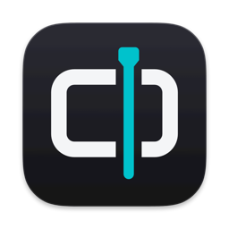
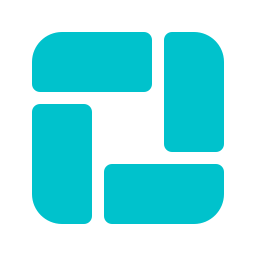
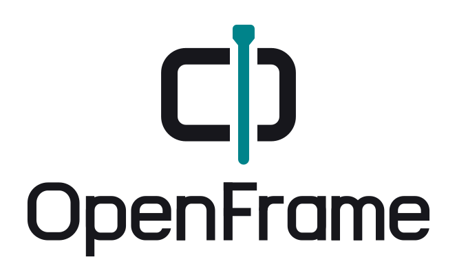

Um quadro de vídeo aberto pela agulha da timeline. A moldura é o vídeo; o playhead ciano é o instante da edição, e é ele que abre o quadro: o nome OpenFrame em um único sinal. As letras do wordmark foram desenhadas para a marca, com bojos em retângulo arredondado como o quadro. A caixa-alta tem a mesma altura do quadro.

256
branco
ciano

Área de proteção: a largura da agulha com a cabeça (≈ ⅛ da altura do símbolo) em volta de todo o lockup. Tamanho mínimo: símbolo 16 px (corte pequeno) · lockup horizontal 96 px de largura.